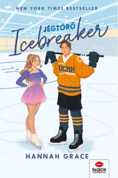

Icebreaker - Jégtörő
Író: Hannah Grace Kiadás: 2023
Anastasia Allen egész életében azért dolgozott, hogy bekerülhessen az USA olimpiai csapatába. Ötéves kora óta versenyszerűen műkorcsolyázik, teljes egyetemi ösztöndíjjal büszkélkedhet, hála helyének a Maple Hills egyetem korcsolyacsapatában, és olyan az időbeosztása, hogy...
Hannah Grace

Foglalkozása: Írónő Született: 1987
Élet és Munka: Hannah Grace egy írónő, aki elsősorban romantikus és erotika műveket alkot. Híres Művei: Íróként Grace népszerű a romantikus és szenvedélyes történeteiért. Az írónő gyakran foglalkozik a szerelem és a kapcsolatok különböző aspektusaival.